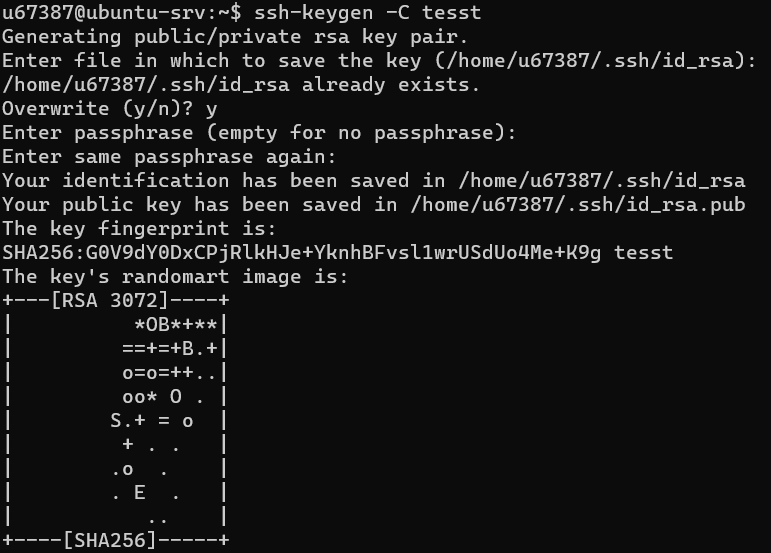
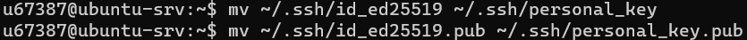
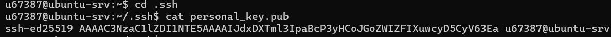
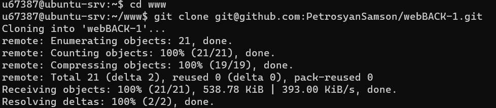

Задание 1
С помощью комады win+R вызвал cmd
Подключился к учебному серверу по SSH с помощью команды ssh "имя пользователя"@"адрес учебного сервера" после чего ввел пароль
С помощью команды ping мы узнаем некоторую информацию путем отправки пакетов Internet Control Message Protocol (ICMP) на целевой хост и ожидания ответа.
После завершения работы команды вы увидите небольшой отчет об ошибках, потере пакетов и статистической сводке результатов, включающей минимальное, максимальное, среднее время в мс.

С помощью команды nslookup узнал A-записи и MX-записи домена kubsu.ru и kubsu-dev.ru
С помощью А-записи домен прикрепляется к IP-адресу. Таким образом, А-запись позволяет найти IP.
MX-запись указывает на сервер, принимающий почту для вашего домена
Спомощью команды whois я узнал информацию о сайтах kubsu.ru и kubsu-dev.ru (владелец, дата создания домена, дата и время последнего обновления и тд)
С помощью команды ssh-keygen -t ed25519 я сгенерировал ssh ключ. Через флаг -t задал алгоритм, на основе которого будут сгенерированы ключи.
На вывод я получил "изображение" ключа из ASCII-символов, а в папке ~/.ssh/ появятся два файла: id_ed25519 и id_ed25519.pub с приватным и публичным ключами соответственно. 
Спомощью этих команд (на скриншоте ) я переименовал ключи для удобства :

Использовав комаду cd .ssh я перешел в каталог .ssh и уже в нем использовав команду cat (название файла) получил тот самый ранее созданный ключ

Далее скопировав этот ключ я добавил его в github :
4)

5)